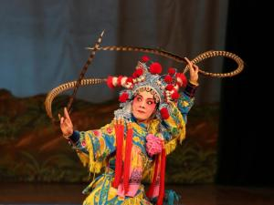

川剧剧目
 川剧剧目繁多，早有“唐三千，宋八百，数不完的三列国”之说。其中要以高腔部分的遗产最为丰富，艺术特色亦最显著，传统剧目有“五袍”（《青袍记》、《黄袍记》、《白袍记》、《红袍记》、《绿袍记》）、“四柱”（《碰天柱》、《水晶柱》、《炮烙柱》、《五行柱》），以及“江湖十八本”等，还有川剧界公认的“四大本头”（《琵琶记》、《金印记》、《红梅记》、《投笔记》），不少为其他剧种失传的剧目。 1949年后，经过整理，出现了一批优秀的川剧剧目，如《柳荫记》、《玉簪记》、《彩楼记》等。
川剧的表演艺术有深厚的生活基础，并形成一套完美的表演程式，剧本具有较高的文学价值，表演真实细腻，幽默机趣，生活气息浓郁，为群众喜爱。 有的演员还创造了不少绝技，如托举、开慧眼、变脸、钻火圈、藏刀等，善于利用绝技创造人物，叹为观止。
明末清初，由于各地移民入川，以及各地会馆的先后建立，致使多种南北声腔剧种也相继流播四川各地，并且在长期的发展衍变中，与四川方言土语、民风民俗、民间音乐、舞蹈、说唱曲艺、民歌小调的融合，逐渐形成具有四川特色的声腔艺术，从而促进了四川地方戏曲剧种——川剧的发展。